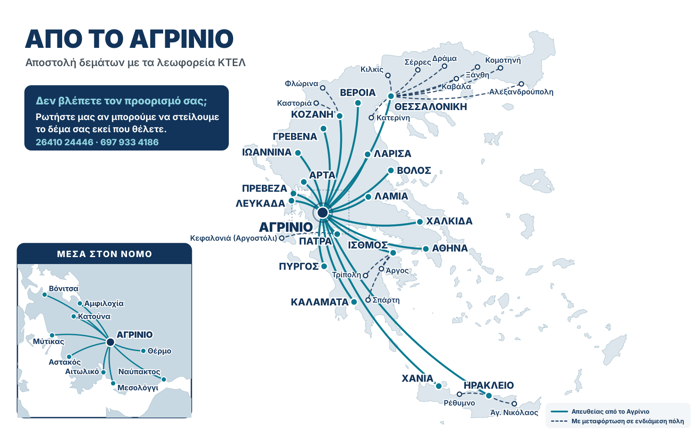

{{nDirect}} towns with a direct bus, the whole prefecture, and {{nTransfer}} towns by connection. Tap a town to estimate the cost.

Type a town to find it. The "from" price is for an envelope; for connections the sender adds about the same again in an envelope on the parcel.
Veria, Grevena and Kozani use the Thessaloniki prices. Isthmus, Chalkida, Livadeia, Itea, Pyrgos and Kalamata use the Athens prices.